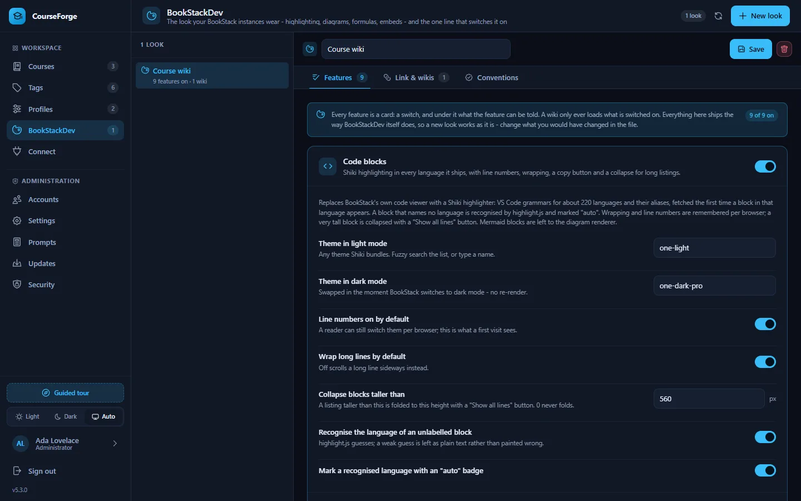

Publish
BookStackDev
Make your BookStack render highlighted code, Mermaid diagrams, formulas and embeds - one line in the wiki's head, configured and served by CourseForge.
BookStack renders a page well, and a course better with a little help: code that is highlighted, a fenced mermaid block that becomes a diagram, \( … \) that becomes a formula, a YouTube link on its own line that becomes the video. BookStackDev is that help - a loader script plus the CSS and JavaScript modules it fetches, pasted into BookStack as one line under Settings › Customization › Custom HTML head content.
CourseForge's prompts write for a wiki wearing it, which is why it is managed in CourseForge rather than beside it.


Looks#
A look is one BookStackDev configuration, kept in CourseForge and served to every wiki allowed to load it. Open BookStackDev in the sidebar and click New look. A look has three tabs: Features, Link & wikis and Conventions.
Features#
Every value of BookStackDev's configuration has a field, grouped into nine cards, each with its switch. The defaults are the ones the standalone BookStackDev ships with, so a new look renders a wiki exactly as BookStackDev itself would.
| Feature | What it does | Worth knowing |
|---|---|---|
| Code blocks | Shiki highlighting in about 220 languages, each grammar fetched the first time it is needed, with line numbers, wrapping, a copy button and a collapse for tall blocks | Light and dark themes are any Shiki themes. A block with no language is recognised by CourseForge's own detector first, highlight.js second. |
| Mermaid diagrams | A fenced mermaid block drawn as a diagram, following the wiki's light or dark mode |
A theme per mode |
| MathJax formulas | TeX typeset in the page | Which delimiters count: \( … \) and $$ … $$ by default, $ … $ off so a price stays a price |
| Light and dark toggle | A floating button | Corner, distance, size |
| Page styling | Zoom, softer text, an optional background image | |
| Link embeds | A link alone in its paragraph becomes the video, track or pen it points at | Only on a page view, by default |
| Audio player | An .mp3 or .m4a link becomes an inline player |
|
| External links | Marked with an arrow and opened in a new tab | Hosts to treat as internal |
| Markdown editor | A single newline becomes a line break in BookStack's editor preview |
Each card's advanced fields - module URLs, selectors, the debug switch - are folded away for the wiki that is unusual.
Link & wikis#
This tab shows the one line to paste into BookStack:
<script src="https://your-install/bs.php?k=<key>" crossorigin="anonymous"></script>bs.php serves the loader with the look's settings written in front of it, and every module and stylesheet the loader fetches comes back through the same endpoint. Each of those requests carries the origin of the wiki page that made it - that is what crossorigin="anonymous" is for - and the endpoint answers only an origin the look allows. Any other gets a 403 naming the wiki, and the browser refuses to run what it did not get permission for.
So the key is not a secret - it sits in the head of every wiki page. What keeps the line honest is the list of allowed wikis:
- Your BookStack instances: on Profiles › Accounts, each instance card has a Look select. An instance wearing a look is allowed by its base URL.
- Other wikis: origins typed in by hand, such as
https://docs.partner.example, for a wiki CourseForge holds no credentials for.
One look serves any number of wikis, and there is nothing to copy per wiki but the line. Regenerate the link issues a new key and retires the old one, for the day a line was pasted somewhere it should not have been; the allowed wikis keep their permission and get the new line.
Conventions#
Every prompt that mentions a formula, a diagram or a code fence is written for BookStackDev's defaults: formulas as \( … \) and $$ … $$, diagrams as fenced mermaid, code in fenced blocks. Change those in a look and the wiki renders one thing while the prompts ask for another.
Conventions compares the look with the prompts of every profile whose instance wears it - the profile's override where there is one, the installation's prompt otherwise - and lists each disagreement with the wording that would resolve it. The same note appears on the profile's Prompts tab and the administration Prompts screen, on the slot concerned, with a button that applies the recommended text where it belongs.
Serving it#
bs.php is the third public PHP file, beside api/index.php and cron.php; the nginx and Caddy configurations on Security already hand every .php file to PHP, and .htaccess needs nothing. Assets are served with a long cache life and an ETag, and the version in every asset URL changes with each CourseForge release, so a wiki picks up an update on its next page load.
The files served are those in assets/bookstackdev/ - the standalone BookStackDev folder, unchanged. The loader reads its configuration from the object CourseForge writes in front of it, or from its own CONFIG block when used standalone.
Shiki, highlight.js, Mermaid, MathJax and the optional Font Awesome glyphs are fetched by the reader's browser from public CDNs, on the versions current at this release: Shiki 4, highlight.js 11, Mermaid 12, MathJax 4 and Font Awesome 7. Mermaid is pinned to the 11.x layout and look, so diagrams do not suddenly change size. For a wiki that must not reach a CDN, the module URLs are advanced fields on the cards; point them at copies you host.
Over MCP#
Under the profiles scope: list_bookstackdev_profiles, list_bookstackdev_options, get_bookstackdev_profile, create_bookstackdev_profile, update_bookstackdev_profile, delete_bookstackdev_profile, rotate_bookstackdev_link and check_bookstackdev_conventions, plus bookstackdev_id on update_profile and add_bookstack_instance.